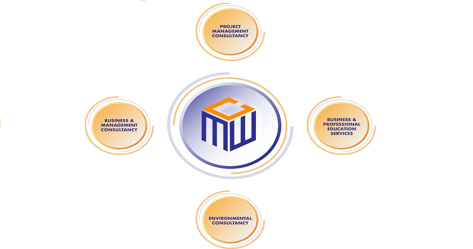

<app-header></app-header>
<section class="hero-wrap hero-wrap-2" style="background-image: url('../../assets/banner.jpg');">
  <div class="overlay"></div>
  <div class="container">
    <div class="row no-gutters slider-text align-items-center justify-content-center">
      <div class="col-md-9 ftco-animate text-center">
        <h1 class="mb-2 bread">Our Services </h1>
      </div>
    </div>
  </div>
</section>

<!--<div class="row justify-content-center">-->
<!--  <div class="col-md-12 text-center heading-section">-->
<!--    <h2 >Our Best Services</h2>-->
<!--  </div>-->
<!--</div>-->
<section class="ftco-section">
  <div class="container">
    <div class="row d-flex">
      <div class="col-md-12 order-md-last wrap-about align-items-stretch">
        <div class="wrap-about-border ftco-animate">
<!--          <div class="img" style="background-image: url(../../assets/service_diagram.JPG);">-->
<!--          </div>-->
          <!-- Image Map Generated by http://www.image-map.net/ -->

          

          <map name="image-map">
            <area target="_blank" alt="" title="" style="outline:none;" href="/service/project-management" coords="479,45,136" shape="circle">
            <area target="_blank" alt="" title="" style="outline:none;" href="/service/business-professional-management" coords="728,251,171" shape="circle">
            <area target="_blank" alt="" title="" style="outline:none;" href="/service/environment" coords="482,480,130" shape="circle">
            <area target="_blank" alt="" title="" style="outline:none;" href="/service/business-management" coords="253,252,158" shape="circle">
          </map>


<!--          <div class="text">-->
<!--            <h3>Business & Management Consultancy</h3>-->
<!--            <p><i class="fa fa-check-circle" style="font-size:18px; color: #ff8416"></i> Our corporate business and strategic management consultancy cover feasibility of entering new businesses or markets, business restructuring, formation of business entities, developing strategic operating model and organizational planning.</p>-->
<!--            <p><i class="fa fa-check-circle" style="font-size:18px; color: #ff8416"></i> Business performance evaluation and risk management advice and services address- all aspects of Business Continuity Management (BCM), Enterprise Risk Management (ERM) and Quality Management issues, its mitigation and solutions.</p>-->
<!--            <br>-->

<!--            <h3>Project Management Consultancy</h3>-->
<!--            <p>We offer project and program management services from framework and methodology development to design project management governance structures. Our technical advisory services cover:   </p>-->
<!--            <p><i class="fa fa-check-circle" style="font-size:18px; color: #ff8416"></i> Vetting of design & engineering documents and project reports</p>-->
<!--            <p><i class="fa fa-check-circle" style="font-size:18px; color: #ff8416"></i> Owner’s Engineers Services / Lender’s Engineers Services</p>-->
<!--            <p><i class="fa fa-check-circle" style="font-size:18px; color: #ff8416"></i> Third party validation of project reports, project plans and project build quality.</p>-->
<!--            <p><i class="fa fa-check-circle" style="font-size:18px; color: #ff8416"></i> Procurement Assistance in the form of vendor due diligence</p>-->
<!--            <p><i class="fa fa-check-circle" style="font-size:18px; color: #ff8416"></i> Third-Party Audit and Inspection Services</p>-->
<!--            <br>-->

<!--            <h3>Environmental Consultancy</h3>-->
<!--            <p><i class="fa fa-check-circle" style="font-size:18px; color: #ff8416"></i> Offering solutions to clients related to environmental and sustainability issues- ranging from developing tools and methodologies to assess and mitigate potential risks, identifying opportunities for environmental improvement, Environmental Permitting Process Support, Environmental Management Plan, conducting training and awareness program on environmental policy.</p>-->
<!--            <br>-->

<!--            <h3>Business and Professional Education Services</h3>-->
<!--            <p><i class="fa fa-check-circle" style="font-size:18px; color: #ff8416"></i> Offering specialized management, personal development, financial and emerging technologies courses and training in order to help professionals and businesses to reach new levels of productivity, value and growth.</p>-->
<!--            <p class="ml-5"><i class="fa fa-arrow-circle-o-right" style="font-size:18px; color: #ff8416"></i> For doing that, we will leverage upon our core competencies, industry knowledge and experiences, translating them into powerful, practical and relevant experiential learning solutions for the benefit of our clients.  </p>-->
<!--            <p><i class="fa fa-check-circle" style="font-size:18px; color: #ff8416"></i> Advise our clients: on setting up professional educational institutions / turnaround of existing educational institutions; on use of distance learning /online/ virtual learning/ VR based teaching -learning tools and pedagogies.</p>-->

<!--            <br>-->


<!--            <a href="#" class="btn py-2 px-3 d-block" style="background-color: #ff8416">-->
<!--              <span style="color: white">Contact Us</span>-->
<!--            </a>-->
<!--          </div>-->
        </div>
      </div>
    </div>
  </div>
</section>
